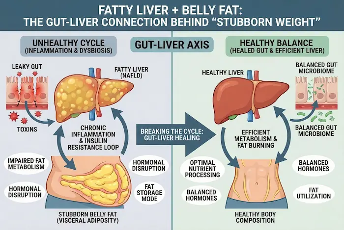
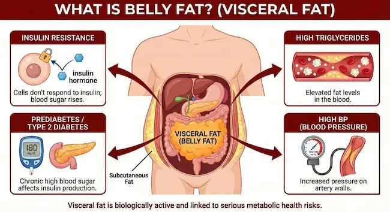
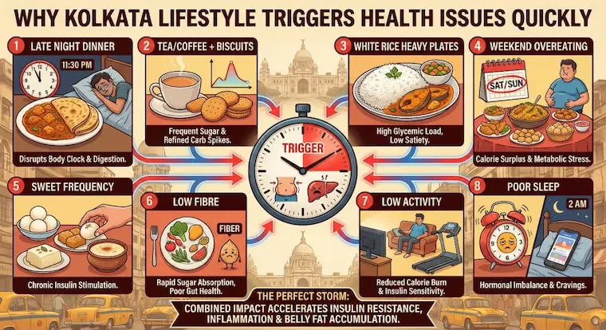
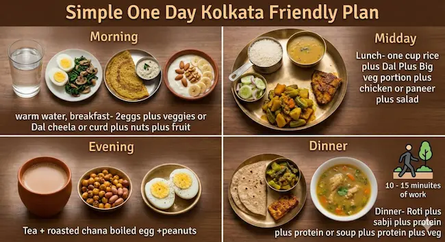
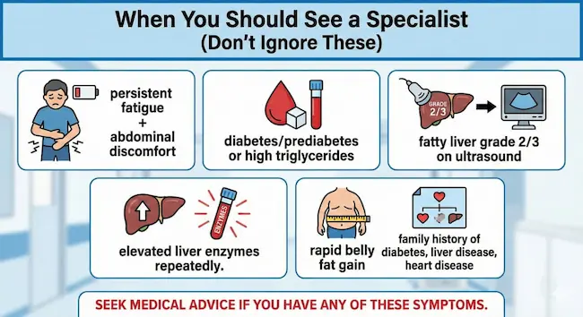

If you’re in Kolkata and feeling like your belly fat won’t budge —even after cutting calories or walking every day—you’re not alone.
One common (and often missed) reason: fatty liver + visceral (deep belly) fat, driven by a powerful internal loop called the gut–liver axis. In simple words: your gut, liver, and metabolism talk to each other all day. When that communication turns unhealthy, your body becomes more likely to store fat—especially around the abdomen—and less likely to burn it efficiently.
This blog explains the gut–liver connection behind stubborn belly fat in a practical, Kolkata-friendly way.
1) Fatty Liver + Belly Fat: Why They Often Come Together
What is fatty liver?
Fatty liver (commonly NAFLD / MASLD) means excess fat gets stored inside liver cells. It can happen even if you don’t drink alcohol. It’s strongly linked with:

- Belly fat (visceral fat)
- Insulin resistance
- High triglycerides
- Prediabetes / Type 2 diabetes
- High BP
Why belly fat is “different fat”
Belly fat isn’t just “extra weight.” Visceral fat sits deep around internal organs and behaves like an active hormone gland. It releases inflammatory signals that make:
- insulin resistance worse
- fatty liver worse
- cravings and hunger regulation worse
So fatty liver and belly fat often form a two-way cycle.
2) The Gut–Liver Axis: The Hidden Metabolic Highway
Your gut and liver are connected through the portal vein—a direct route that carries nutrients, bacteria by-products, and inflammatory compounds from intestines straight to the liver.
When the gut environment is balanced, the liver receives mostly “safe” signals.
When the gut is disturbed, the liver receives more:
- inflammatory compounds
- bacterial toxins (endotoxins)
- excess sugar/fat metabolites
This can trigger:
- fat storage in liver
- inflammation in liver
- reduced fat-burning
- more stubborn belly fat
3) How Gut Problems Can Drive Fatty Liver & Stubborn Weight
A) Dysbiosis (unhealthy gut microbiome)
If “good bacteria” reduce and “harmful bacteria” increase, the body may:
- extract more calories from the same food
- increase inflammation
- worsen insulin resistance
B) Leaky gut (increased intestinal permeability)
When the gut lining becomes more permeable, inflammatory particles can enter circulation and reach the liver, increasing:
- liver inflammation
- fat accumulation
- metabolic slowdown
C) Bloating, acidity, irregular bowel movements → not just “gas”
In many Kolkata lifestyles (late dinners, tea + biscuits, weekend biryani, sweets), the gut can remain irritated—leading to cravings, poor sleep, and hormonal imbalance that indirectly pushes fat storage.
4) Insulin Resistance: The Core Link Between Fatty Liver and Belly Fat
Insulin is the hormone that moves glucose into cells.
When the body becomes resistant to insulin:
- blood sugar stays higher
- the pancreas produces more insulin
- high insulin pushes the body to store fat, especially visceral fat
- liver converts excess glucose into fat (fatty liver)
Key point: You can have insulin resistance even with “normal weight,” but it’s very common with belly fat.
5) Kolkata Lifestyle Triggers That Quietly Worsen the Gut–Liver Loop
These are common patterns we see locally (no guilt—just awareness):

- Late-night dinner (after 9 pm) + sleeping soon after
- Tea/coffee + biscuits multiple times daily (hidden sugar + refined flour)
- White rice-heavy plates with low protein
- Weekend overeating (biryani, rolls, fried snacks)
- Sweet frequency (mishti, packaged sweets, desserts)
- Low fiber (less vegetables/whole grains)
- Low activity outside of work + long sitting hours
- Poor sleep and high stress
These don’t just add calories—they disrupt gut bacteria, insulin response, and liver fat metabolism.
6) Signs That “Stubborn Weight” Might Be a Fatty Liver + Gut Issue
Many people don’t feel anything early. But common clues include:
- belly fat increasing even without big weight gain
- constant fatigue / low energy
- cravings, especially evening sugar cravings
- bloating, acidity, irregular bowel habits
- borderline high sugar (prediabetes) or triglycerides
- mildly elevated liver enzymes (ALT/AST)
- snoring/sleep issues (often linked with visceral fat)
Important: Only a clinician can confirm diagnosis. But these signs can be a reason to get checked.
7) What Tests Usually Help (Doctor-guided)
Depending on your history, a doctor may advise:
- LFT (liver function tests)
- Ultrasound abdomen (fatty liver grading)
- Fasting glucose, HbA1c
- Fasting insulin / HOMA-IR (in selected cases)
- Lipid profile (especially triglycerides)
- Thyroid profile (if indicated)
- Fibrosis assessment (FibroScan or non-invasive scoring) if risk is high
8) The Fix: Heal the Gut–Liver Loop (Not Just “Eat Less”)
The best strategy is not crash dieting. It’s metabolic correction.
A) Build a “liver-friendly plate” (simple)
Aim each meal to have:
- Protein: fish/egg/chicken/dal/paneer/curd
- Fiber: vegetables + salads
- Smart carbs: controlled rice/roti portion
- Healthy fats: small amounts (mustard oil, nuts)
Rule that works:
½ plate vegetables + ¼ protein + ¼ carbs
B) Kolkata-friendly food swaps (practical)
| If you usually eat… | Try this instead… |
| 2–3 cups white rice | 1 cup rice + extra dal/veg + protein |
| Tea + biscuits daily | Tea + roasted chana / nuts / egg / fruit |
| Late heavy dinner | Early lighter dinner + walk 10–15 min |
| Fried snacks often | Air-fried / roasted snacks; keep fried as occasional |
| Sweets after dinner | Shift sweet to daytime; keep portion small |
C) Improve gut bacteria (simple habits)
- Add curd (dahi) if tolerated
- Add fiber slowly (veg, oats, chia, seeds)
- Include fermented foods in small amounts if suitable
- Reduce ultra-processed foods (packaged snacks, sugary drinks)
(If you have IBS, acidity, or food intolerances, don’t self-experiment aggressively—personalized guidance helps.)
D) Walking is good, but add strength (belly fat responds faster)
To reduce visceral fat, add strength training 3x/week (even at home):
- squats, lunges, push-ups (modified), resistance bands
- 20–30 minutes is enough to start
Strength training improves:
- insulin sensitivity
- muscle mass (metabolic engine)
- fat burning even at rest
E) Sleep & stress (underrated but crucial)
Poor sleep increases:
- hunger hormones
- sugar cravings
- insulin resistance
- Kolkata-friendly tip:
- Try a “closing routine” after dinner:
- 10–15 min walk + warm water + screens off 30–45 min before bed.
9) A Sample 1-Day Kolkata-Friendly Plan (Easy to Follow)

Morning
- Warm water
- Breakfast: 2 eggs + veggies / or dal cheela / or curd + nuts + fruit (small portion)
Midday
- Lunch: 1 cup rice + dal + big veg portion + fish/chicken/paneer
- Optional: salad
Evening
- Tea + roasted chana / boiled egg / peanuts (not biscuits daily)
Night (early)
- Dinner: roti + sabzi + protein OR soup + protein + veg
- 10–15 min walk
Weekly rule: Keep biryani/roll/mishti—just make it planned, not random and frequent.
10) When You Should See a Specialist (Don’t Ignore These)
Seek medical advice if you have:
- persistent fatigue + abdominal discomfort
- diabetes/prediabetes or high triglycerides
- fatty liver grade 2/3 on ultrasound
- elevated liver enzymes repeatedly
- rapid belly fat gain
- family history of diabetes, liver disease, heart disease

PancreaCare by Advitya Healthcares (Kolkata Focus): How We Help
At PancreaCare by Advitya Healthcares, we focus on gut–liver–metabolic health with a structured approach—so you’re not stuck doing random diets.
A doctor-guided plan may include:
- understanding your fatty liver risk and metabolic profile
- identifying gut triggers (bloating, acidity, bowel irregularity)
- lifestyle + nutrition guidance that fits Kolkata food habits
- monitoring liver health and preventing progression
If your “stubborn weight” is really a gut–liver issue, the solution is not punishment—it’s correction.
FAQ (Quick Answers)
1) Can fatty liver happen if I don’t drink alcohol?
Yes. Non-alcoholic fatty liver is very common and often linked to belly fat and insulin resistance.
2) Can I reduce fatty liver without losing a lot of weight?
Often, yes. Even 5–10% weight reduction and better insulin sensitivity can significantly improve liver fat.
3) Is rice completely banned in fatty liver?
Not necessarily. Portion control + protein + vegetables matters more than “zero rice.”
4) Does bloating mean fatty liver?
Not always. But gut disturbance and fatty liver can coexist and worsen each other.
Medical Disclaimer
This blog is for general awareness and does not replace medical consultation, diagnosis, or treatment. If you have persistent symptoms or abnormal test reports, please consult a qualified doctor.
Have a question this article does not answer?
Send us your reports. A specialist reviews them before you travel, so the first visit begins with a plan rather than a repeat test.